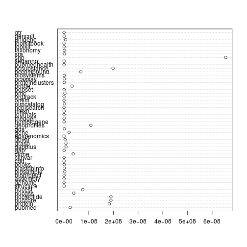

The NCBI has a lot of data... like a lot
(thanks @yokofakun/wikipedia!)
load_all("~/src/rentrez") all_dbs <- entrez_dbs()[-47] #there's always one... how_many_recs <- function(db) as.integer(entrez_db_summary(db)["Count"]) nrecs <- sapply(all_dbs, how_many_recs)
dotchart(nrecs)

Via the web...
..or an API
genomes
rentrez